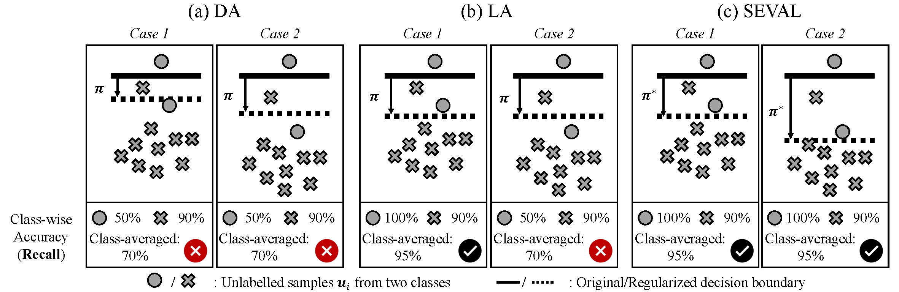
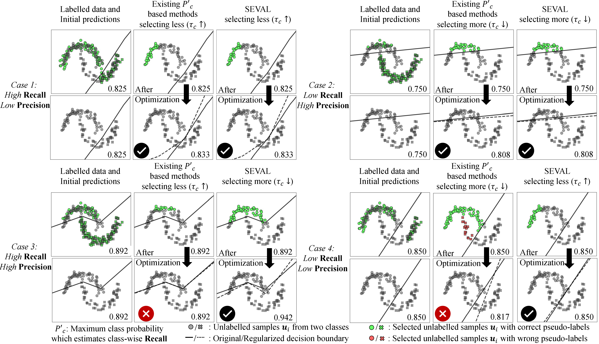
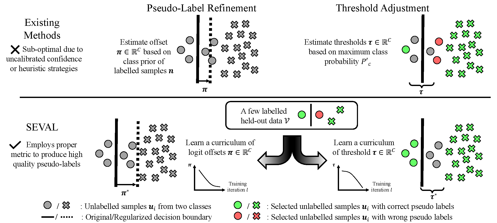

Semi-supervised learning (SSL) algorithms often struggle to perform well when trained on imbalanced data. In such scenarios, the generated pseudo-labels tend to exhibit a bias toward the majority class, and models relying on these pseudo-labels can further amplify this bias. Existing imbalanced SSL algorithms explore pseudo-labeling strategies based on either pseudo-label refinement (PLR) or threshold adjustment (THA), aiming to mitigate the bias through heuristic-driven designs. However, through a careful statistical analysis, we find that existing strategies are suboptimal: most PLR algorithms are either overly empirical or rely on the unrealistic assumption that models remain well-calibrated throughout training, while most THA algorithms depend on flawed metrics for pseudo-label selection.
To address these shortcomings, we first derive the theoretically optimal form of pseudo-labels under class imbalance. This foundation leads to our key contribution: SEVAL (SEmi-supervised learning with pseudo-label optimization based on VALidation data), a unified framework that learns both PLR and THA parameters from a held-out partition of the labeled training data — no additional annotation required. By jointly optimizing these components, SEVAL adapts to specific task requirements while ensuring per-class pseudo-label reliability. Our experiments demonstrate that SEVAL outperforms state-of-the-art SSL methods across diverse imbalanced scenarios while remaining compatible with any pseudo-label-based SSL algorithm.
Why existing label refinement is fundamentally suboptimal
Pseudo-label refinement methods adjust the model's logit vector $\hat{\boldsymbol{z}}^{\mathcal{U}}$ by a class-specific offset $\boldsymbol{\pi} \in \mathbb{R}^C$ before assigning pseudo-labels. The two dominant strategies — Distribution Alignment (DA) and Logit Adjustment (LA) — both fail for different reasons. We derive the correct target from first principles.
The theoretically optimal classifier under class imbalance
Assume the test distribution $\mathcal{T}$ shares class-conditional distributions with the training set $\mathcal{X}$ but has different class priors: $P^{\mathcal{X}}(X|Y) = P^{\mathcal{T}}(X|Y)$, $P^{\mathcal{X}}(Y) \neq P^{\mathcal{T}}(Y)$. This prior-shift assumption is standard in class-imbalanced settings.
Given a classifier $f^*(X)$ optimised on $P^{\mathcal{X}}(X,Y)$, the optimal Bayes classifier on the test distribution satisfies $$f^{\mathcal{T}}(X) \propto \frac{f^*(X)\, P^{\mathcal{T}}(Y)}{P^{\mathcal{X}}(Y)}.$$
The same optimal classifier is also optimal on the resampled unlabelled distribution $\displaystyle\frac{P^{\mathcal{U}}(X,Y)\,P^{\mathcal{T}}(Y)}{P^{\mathcal{U}}(Y)}$.
The key implication: pseudo-label offsets should be calibrated to the test distribution $P^{\mathcal{T}}(Y)$, not to the unlabeled training distribution $P^{\mathcal{U}}(Y)$. When $P^{\mathcal{T}}(Y)$ is uniform (the standard evaluation assumption), the optimal classifier should maximise class-averaged likelihood.
The optimal Bayes classifier on $P^{\mathcal{U}}(X,Y)$ should have maximised class-averaged likelihood, when $P^{\mathcal{T}}(Y)$ is uniform.
From this lens, both DA and LA are provably suboptimal. DA aligns pseudo-label priors to $P^{\mathcal{U}}(Y)$ — the wrong distribution — leading to increased false negatives for minority classes without improving true positives. LA subtracts a fixed log-prior offset, which is theoretically justified only when $f^*(X)$ is perfectly calibrated. Neural networks during SSL are systematically uncalibrated, and their logit distributions shift throughout training, so the optimal offset must shift accordingly. LA has no mechanism to track this.

Why dynamic thresholding optimises the wrong metric
Class-specific thresholds $\boldsymbol{\tau} \in \mathbb{R}^C$ filter which unlabelled samples are included as pseudo-labels. Choosing good thresholds directly controls pseudo-label noise — and lower noise yields better models:
Let $\hat{f}$ be trained on $\hat{\mathcal{U}}$ with noise rate $\rho = 1 - P_{\hat{\mathcal{U}}}(y = \hat{y})$ and $|\hat{\mathcal{U}}| = M$ fixed. For any $\delta > 0$, with probability $\geq 1-\delta$: $$R_{\mathcal{L},\mathcal{U}}(\hat{f}) \leq \min_{f \in \mathcal{F}} R_{\mathcal{L},\mathcal{U}}(f) + \frac{4L\,\mathfrak{R}(\mathcal{F})}{1 - 2\rho} + 2\sqrt{\frac{\log(1/\delta)}{2M}}.$$
Reducing $\rho$ tightens the bound. The goal of thresholding is to select the subset that minimises pseudo-label noise.
The overall pseudo-label accuracy decomposes two ways. Only one is actionable:
$$P(y = \hat{y}) = \sum_{j}\underbrace{P(y=j \mid \hat{y}=j)}_{\textbf{Precision}} \cdot P(\hat{y}=j)$$ $P(\hat{y}=j)$ is directly computable from model predictions.
$$P(y = \hat{y}) = \sum_{j}\underbrace{P(\hat{y}=j \mid y=j)}_{\textbf{Recall}} \cdot P(y=j)$$ $P(y=j)$ requires the true labels of unlabelled samples — unavailable.
A better thresholding vector $\boldsymbol{\tau}$ should be derived from class-wise Precision, not class-wise Recall.
Yet FlexMatch, FreeMatch, and Adsh — the leading dynamic thresholding methods — all set thresholds based on maximum class probability $P'_c$, which is a per-class estimate of Recall. They lower thresholds for classes with small $P'_c$, implicitly assuming Recall and Precision are always in a trade-off. This assumption breaks in two important and common cases: a class can have simultaneously high Recall and high Precision (in which case these methods restrict sampling unnecessarily), or low Recall and low Precision (in which case they admit too many noisy samples).

Optimal thresholds equalise per-class Precision
Maximising total pseudo-label accuracy subject to a fixed budget $M$ leads to the constrained optimisation: $$\max_{\boldsymbol{\tau}} \sum_{c=1}^C \mathcal{A}(\tau_c, c)\,\mathcal{S}(\tau_c, c), \quad \text{s.t.} \quad \sum_{c=1}^C \mathcal{S}(\tau_c, c) = M,$$ where $\mathcal{A}(\tau_c, c)$ is the Precision of selected samples for class $c$ and $\mathcal{S}(\tau_c, c)$ is their count. Applying Lagrange multipliers and a smoothness approximation yields a clean optimality condition:
At the optimal $\boldsymbol{\tau}$, per-class Precision $\mathcal{A}(\tau_c, c)$ must be equal across all classes. The optimal threshold vector aligns Precision to a common target level $t$. This is a multi-class analogue of the Neyman–Pearson Lemma.
SEVAL: learning both components from held-out data
SEVAL optimises PLR offsets $\boldsymbol{\pi}$ and THA thresholds $\boldsymbol{\tau}$ simultaneously from a small held-out partition $\mathcal{V}$ of the labelled training data. No additional annotation is required: the training set $\mathcal{X}$ is simply split equally into $\mathcal{X}'$ (for SSL) and $\mathcal{V}'$ (for curriculum learning). PLR and THA address complementary stages of the pseudo-labeling pipeline and can be optimised in parallel with network training, incurring at most 50% theoretical overhead.

Learning the offsets
PLR offsets are found by minimising the class-averaged cross-entropy on $\mathcal{V}$: $$\boldsymbol{\pi}^* = \arg\min_{\boldsymbol{\pi}} \sum_{j=1}^C \frac{1}{C k_j} \sum_{i=1}^K \mathbf{1}(y_i = j)\,\mathcal{L}(y_i,\, \sigma(\boldsymbol{z}_i^{\mathcal{V}} - \log\boldsymbol{\pi})).$$ Crucially, this does not require knowing $P^{\mathcal{U}}(X,Y)$ — only labelled held-out data. Because $\boldsymbol{\pi}^*$ is tied to the current model parameters, it is also applied at test time, outperforming LA without any calibration assumption.
Learning the thresholds
THA thresholds are set by searching for the value $\tau_c$ that brings each class's Precision (estimated on $\mathcal{V}$) to the target level $t$: $$\tau_c^* = \begin{cases} \arg\min_{\tau_c}|\mathcal{A}(\tau_c, c) - t| & \text{if } \alpha_c < t \\ 0 & \text{otherwise}\end{cases}$$ When a class is already sufficiently accurate ($\alpha_c \geq t$), all its samples are included. For imbalanced $\mathcal{V}$, class-frequency weights normalise the cost function. Group-based optimisation handles classes with very few samples ($k_c < 10$). The single hyper-parameter $t$ replaces the per-class threshold vector, and $\boldsymbol{\pi}$ and $\boldsymbol{\tau}$ are updated via exponential moving average throughout training to ensure curriculum stability.
Built from the training split
$\mathcal{X}$ is partitioned into two equal halves. The curriculum is learned on one half and applied to the full dataset after training begins.
Works with any SSL algorithm
SEVAL modifies only $\boldsymbol{q}$ and $\boldsymbol{\tau}$. No changes to the loss function, data augmentation, or architecture are needed.
Stable with as few as 10 samples
Group-based threshold optimisation guarantees stability under scarce per-class data. Performance is flat from 10 to 500 validation samples per class.
State-of-the-art results across imbalanced SSL benchmarks
We evaluate on CIFAR-10-LT, CIFAR-100-LT, STL-10-LT (imbalance ratios up to 150), and the real-world Semi-Aves benchmark (200 bird species, natural long tail ranging from 53 to 15 samples per class). All comparisons share identical codebases and hyperparameter settings. Results below are test accuracy (%) averaged over three seeds.
| Algorithm | Type | CIFAR-10-LT γ=100, n₁=500 |
CIFAR-100-LT γ=10, n₁=50 |
STL-10-LT γ=20, n₁=150 |
|---|---|---|---|---|
| FixMatch | — | 67.8 | 45.2 | 47.6 |
| + DARP | PLR | 74.5 | 49.4 | 58.1 |
| + FlexMatch | THA | 74.0 | 49.9 | 48.3 |
| + FreeMatch | THA | 73.8 | 49.8 | 63.5 |
| + SEVAL-PL | PLR+THA | 77.7 | 50.8 | 67.4 |
| + DASO | LTL+PLR | 76.0 | 49.2 | 65.7 |
| + ACR | LTL+PLR+THA | 80.2 | 50.6 | 65.6 |
| + SEVAL | LTL+PLR+THA | 82.8 | 51.4 | 67.4 |
SEVAL-PL (PLR+THA only, without any long-tailed learning component) already outperforms most hybrid methods. Full SEVAL sets a new state of the art in every category. See the paper for Semi-Aves results, varied imbalance ratios, low-label regimes ($n_1 = 4$), and ablations.
If you find this work useful
@article{li2026seval,
title = {Imbalanced Semi-Supervised Learning via Label Refinement
and Threshold Adjustment},
author = {Li, Zeju and Zheng, Ying-Qiu and Chen, Chen and Jbabdi, Saad},
journal = {Transactions on Machine Learning Research},
year = {2026},
url = {https://openreview.net/forum?id=HbAMQiyK48}
}